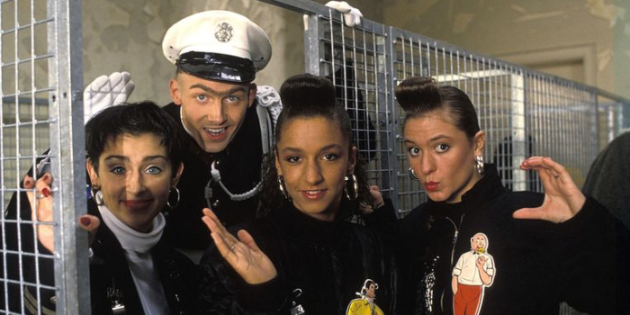
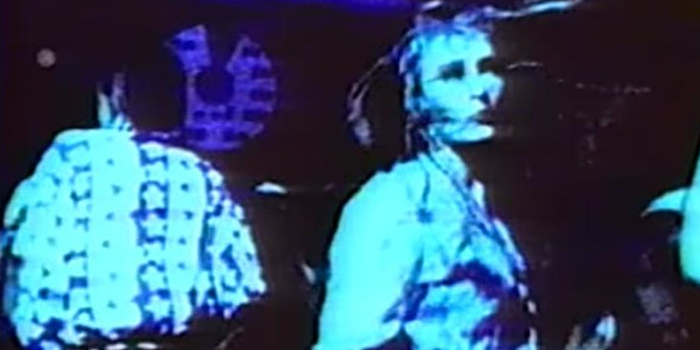
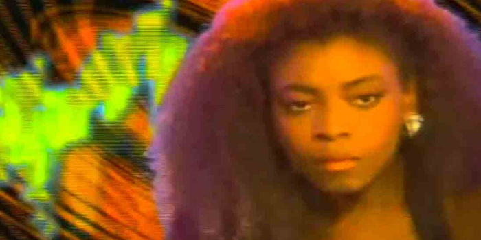
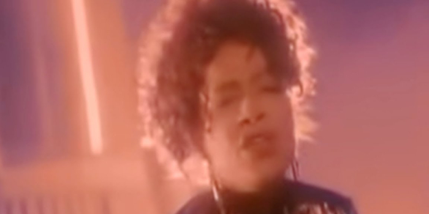
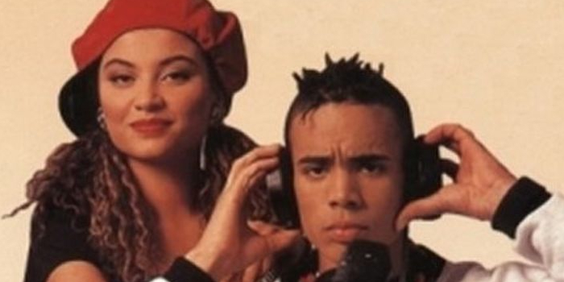

Hieronder bespreken we een aantal artiesten/acts die bepalend zijn geweest voor het genre Eurodance.

Confetti's
Mijn interesse in electronische muziek is denk ik begonnen met de new wave hits van de Confetti's. Dat is eigenlijk nog jaren 80.

LA Style
LA Style was voor mij heel revolutionair en voor mij als tiener erg indrukwekkend. Ik wilde meer van dit soort muziek horen.

Technotronic
Technotronic wordt gezien als de pionier van het genre Eurodance met een bestseller 'Pump up the Jam'.

SNAP!
